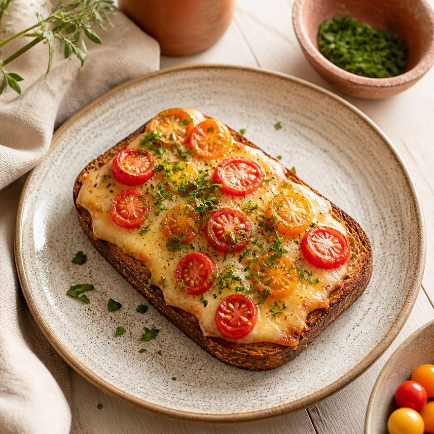

#sekta

завтрак
тост с гаудой, томатами и рубленой зеленью
10 минут
Ингредиенты
- цельнозерновой хлеб — 2 куска
- гауда — 60 г
- томаты — 1 средний или 6–8 черри
- петрушка — небольшая горсть
- оливковое масло — 1 ч. л
- соль, перец — по вкусу
Приготовление
- Хлеб поджарить в тостере до золотистой корочки.
- Гауду нарезать тонкими пластинами, выложить на горячий тост — сыр слегка расплавится.
- Томаты нарезать кружочками или разрезать черри пополам, выложить поверх сыра.
- Петрушку мелко порубить.
- Сбрызнуть оливковым маслом, посолить и поперчить.